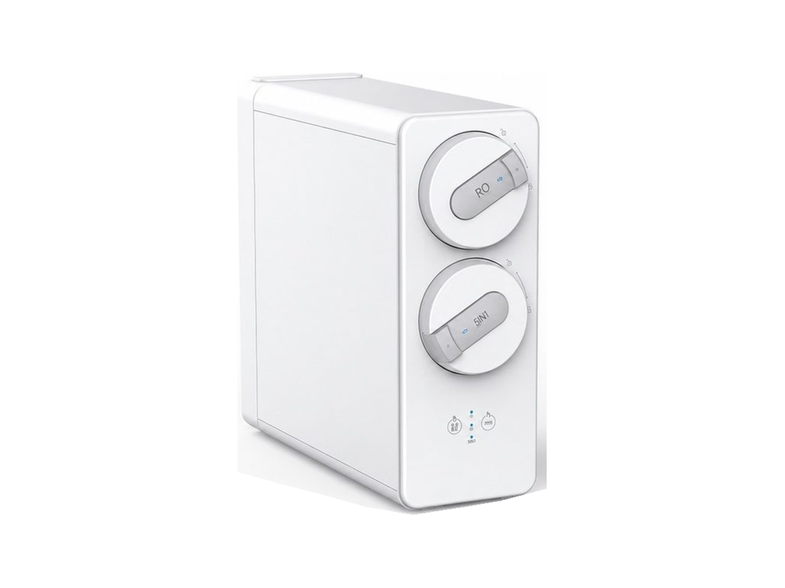

シンク下設置型
シンク下設置型RP-U07
400～600 GPDシンク下RO浄水器
SKU: RP-U07
MOQ：お問い合わせ時に確認
ホーム/製品/シンク下ROシステム/ RP-U15

シンク下ROシステム
シンク下設置型冷却ユニット
RP-U15 — シンク下設置型冷却ユニット. 主要仕様: 冷却能力 2.7 L/h. 仕様はモデルと注文ごとに確認します。
シンク下クーリングコンパニオン。対応するシンク下システムと組み合わせて使用します。組み合わせはご注文ごとに確認します。
電圧／周波数は対象国に合わせて設定可能です。その他の構成は注文ごとに確認します。
RP-U15はシンク下クーリングコンパニオン — 対応するシンク下システムに冷水を追加するコンプレッサー冷却ユニットです。単独の浄水器ではありません。対応するシンク下システムとの組み合わせはご注文ごとに確認します。冷却は5–10°Cのコンプレッサー冷却で、冷却能力2.7 L/h、冷水タンク1.4 L、吐出流量1.2 L/min、寸法369 × 151 × 362 mmです。
最小注文数量はいくつですか？
初回注文はモデルあたり200台、再注文は500台です。
大口注文の前にサンプルを注文できますか？
はい。サンプルは15日でご用意できます。サンプル費用は初回大口注文時に返金されます。大口注文はサンプル承認後40日で出荷し、FOB深圳条件となります。
RP-U15は単独の浄水器ですか？
いいえ。RP-U15は対応するシンク下システムと組み合わせて使うクーリングコンパニオンです。組み合わせはご注文ごとに確認します。
ROPureOEMカタログの仕様 7 行。
| 冷却能力 | 2.7 L/h |
|---|---|
| 冷却 | コンプレッサー；5～10°C |
| 冷水タンク | 1.4 L |
| 吐出流量 | 1.2 L/min |
| 寸法（長さ×幅×高さ） | 369 × 151 × 362 mm |
| 電圧／周波数 | 対象国に合わせて設定可能 |
| その他の構成 | ご注文ごとに確認済みです |
仕様はROPureOEMカタログに基づいています。値がまだ確認されていない場合は「注文ごとに確認」と記載しています。未確認の数値は公表しません。
シンク下設置型400～600 GPDシンク下RO浄水器
SKU: RP-U07
MOQ：お問い合わせ時に確認
 シンク下設置型
シンク下設置型貯湯式加熱付きシンク下RO
SKU: RP-U08
MOQ：お問い合わせ時に確認

シンク下設置型大容量前面アクセスRO浄水器
SKU: RP-U09
MOQ：お問い合わせ時に確認
 シンク下設置型
シンク下設置型3カートリッジRO浄水器
SKU: RP-U11
MOQ：お問い合わせ時に確認